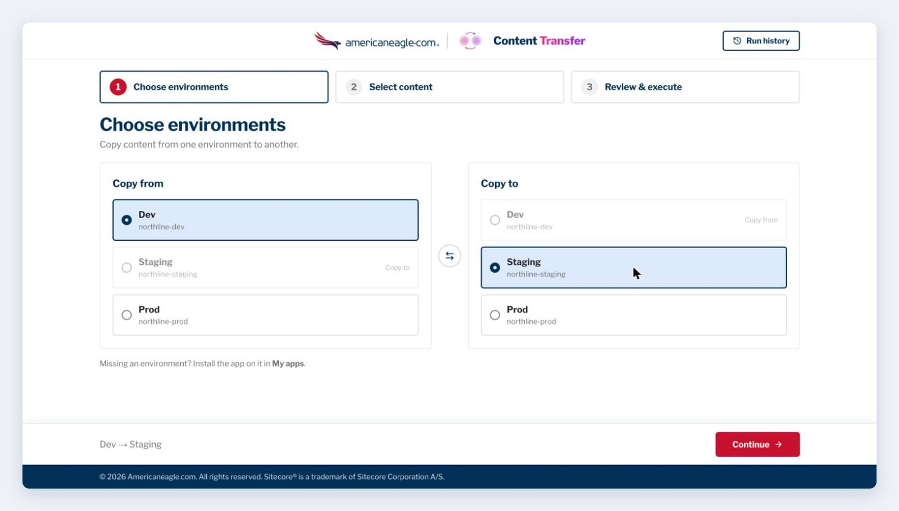
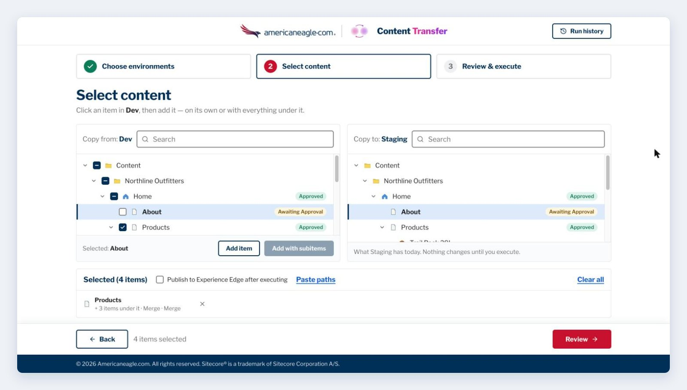
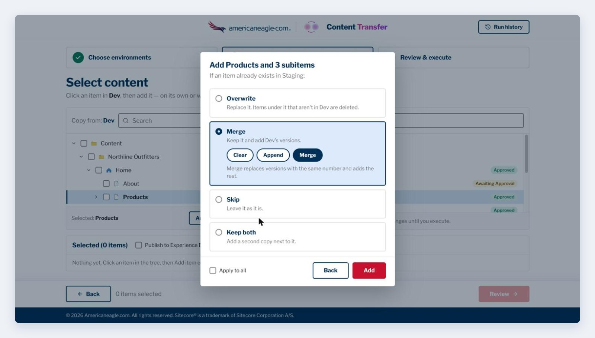
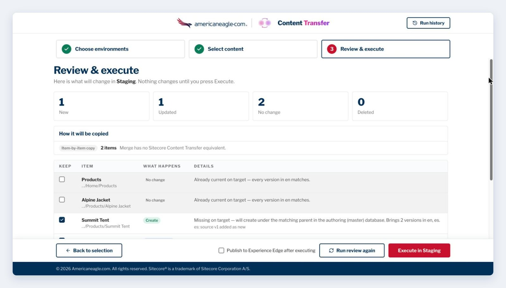
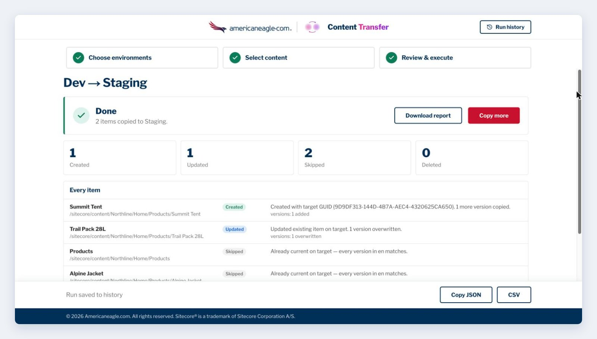
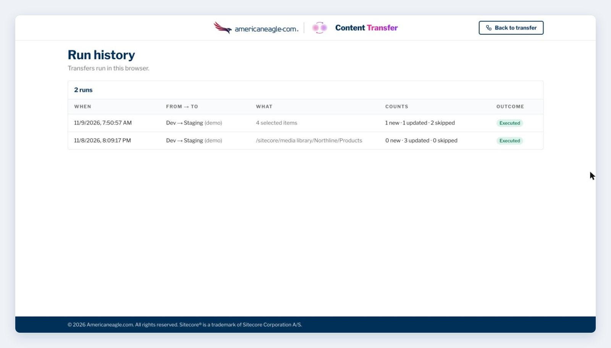

A step-by-step guide to Content Transfer, the SitecoreAI Marketplace app that copies content from one environment to another the way the Sitecore 10 Package Manager did: pick items, choose what happens if they exist, review every change, then execute.
Most SitecoreAI customers run several environments: a development sandbox, staging, production. Content built in one of them has to end up in the others. Packages and serialization are developer tools; they work on files and pipelines. Neither lets a content author say copy these eleven pages to staging, and show me what that will change before it changes anything.
Content Transfer is that tool. It is a SitecoreAI Marketplace app I built that shows two environments' content trees side by side, lets you pick what should move, shows exactly what would change, and only writes when you press Execute. If you used the Sitecore 10 Package Manager, the options will feel familiar.
Copies run through Sitecore's Content Transfer API whenever possible, which keeps item IDs, every version and language, and media files. That API needs the Organization Admin or Owner role in Cloud Portal. Other users can still copy with item-by-item copy, where item IDs differ on the destination and media files are not carried.
The app has three steps, shown in a stepper at the top: Choose environments, Select content, and Review & execute.

Click Continue. Nothing is read from either environment until you do.

The two trees sit side by side. The left one (Copy from) is where you choose; the right one (Copy to) is read-only and shows what the destination has today. When you click an item on the left, its path is highlighted on the right if it already exists there. Workflow badges (Approved, Awaiting Approval) show each item's state.
Everything you add appears in the Selected strip, with how many items are under it and the option you chose. Remove any entry with ✕, or Clear all.

Each time you add, Content Transfer asks what to do if the item already exists on the destination:
| Option | What it does |
|---|---|
| Overwrite | Replaces the item. Items under it on the destination that aren't in the source are deleted (moved to the Recycle Bin, after you confirm). |
| Merge → Clear | Keeps the item and replaces its versions with the source's. |
| Merge → Append | Keeps the item and adds the source's versions as new versions. |
| Merge → Merge | Replaces versions with the same number and adds the rest. |
| Skip | Leaves the existing item as it is. |
| Keep both | Adds a second copy next to the existing one. |
Tick Apply to all to use the same answer for the rest of this session.
When your selection is ready, click Review.

Review compares every selected item with the destination and builds a plan. It writes nothing.
Changed something in the source meanwhile? Click Run review again.
Click Execute in [destination]. If the plan deletes anything, which only Overwrite can do, you are asked to confirm first, and deleted items go to the Recycle Bin. Progress is shown as the transfer runs, and you can cancel.
Items are written in a safe order: templates, then media, then items (parents before children). Then reference fields are relinked to the destination's items. Deletions come last.
Publish to Experience Edge after executing is off by default. Tick it (on the Selected strip or beside Execute) to publish the copied items once the execute finishes with no failures. Without it, nothing changes on the live site until someone publishes.

The Done screen shows the outcome, the counts (Created, Updated, Skipped, Deleted), and every item with what happened to it, including the new item's ID on the destination.

Run history (top right) lists the transfers run in this browser: when, from where to where, what, the counts, and the outcome. It is stored in your browser's local storage, not on a server.
Content Transfer chooses the engine per item and tells you which it picked during Review:
| Option | Engine |
|---|---|
| Overwrite, with subitems | Sitecore Content Transfer API (when every descendant is ticked) |
| Overwrite, item only | Sitecore Content Transfer API |
| Skip | Sitecore Content Transfer API |
| Missing parents | Sitecore Content Transfer API, so they keep their IDs |
| Merge (Clear / Append / Merge), Keep both | Item-by-item copy (the API has no equivalent) |
The Content Transfer API keeps item IDs, every version and language, and media files. Item-by-item copy also copies page layouts, rewriting component datasource IDs to the destination's items.
Yes, when the copy runs through the Content Transfer API (Overwrite, Skip, and missing parents). Merge and Keep both use item-by-item copy, which creates new IDs.
Media files travel with the Content Transfer API. Media Library items can be selected and copied like any other item.
Items deleted by Overwrite go to the destination's Recycle Bin and can be restored there. Created and updated items are not rolled back automatically, so keep the downloaded report as your record.
A transfer needs a source and a destination. Install the app on a second environment in My apps.
Content Transfer is a personal project by Teja Vallabhaneni. Its sibling app, Publish Guard, audits content for broken links, missing alt text, incomplete languages and publishing blockers before you release. A how-to guide for it is also on this blog.